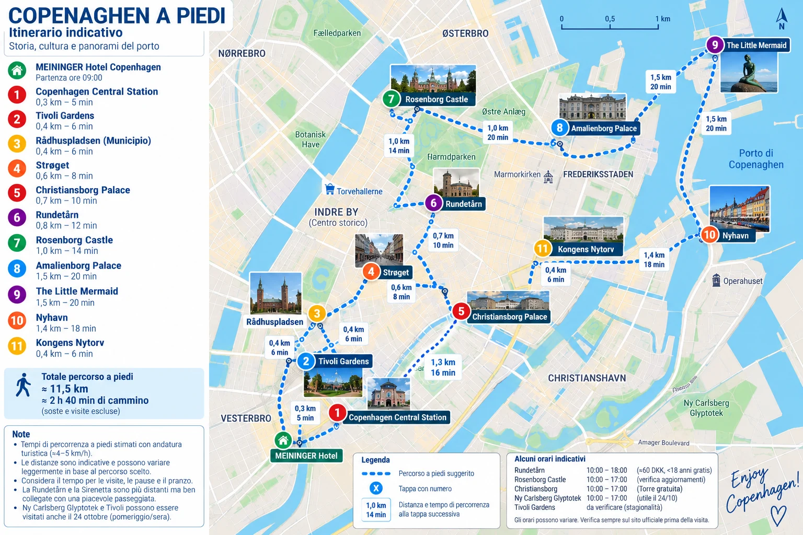

🗺️ Mappa attrazioni Copenaghen
Cartina generale delle 12 attrazioni principali di Copenaghen, senza suddivisione per giornate. Distanze e tempi sono indicativi.

Le distanze e i tempi sono stime indicative, non calcolate su una rete pedonale. La cartina è illustrativa e comprende anche le attrazioni del sabato. Il percorso Google Maps è invece riferito al giro previsto domenica 25. Per strade reali, accessibilità e deviazioni usare Google Maps.
12 · Christiania: quartiere di Christianshavn. Dal Palazzo di Christiansborg circa 1,6 km / 20–25 minuti a piedi (stima indicativa). La cartina illustrata soprastante non contiene ancora il nuovo indicatore: fare riferimento al percorso Google Maps.